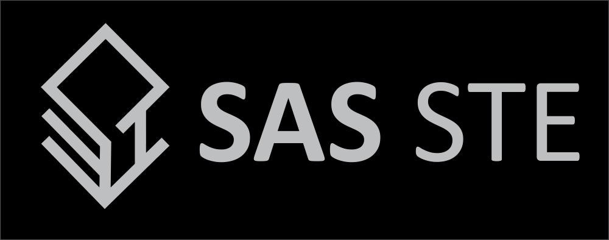

SAS-STE : Secure Text Encryption is a text based encryption algorithm designed and made by Saaiq Abdulla Saeed. SAS-STE supports the encryption of pure plain text and any text based files. In addition to supporting keyed and no key encryptions, SAS-STE allows you to re use previously generated keys. To find more information about SAS-STE and how it works, please refer to the documentation.
Releases
SAS-STE-Wizard
A step-by-step command line interface (CLI) wizard that uses SAS-STE algorithm.
Download v2.2.4
For Windows
For Linux
Source Code